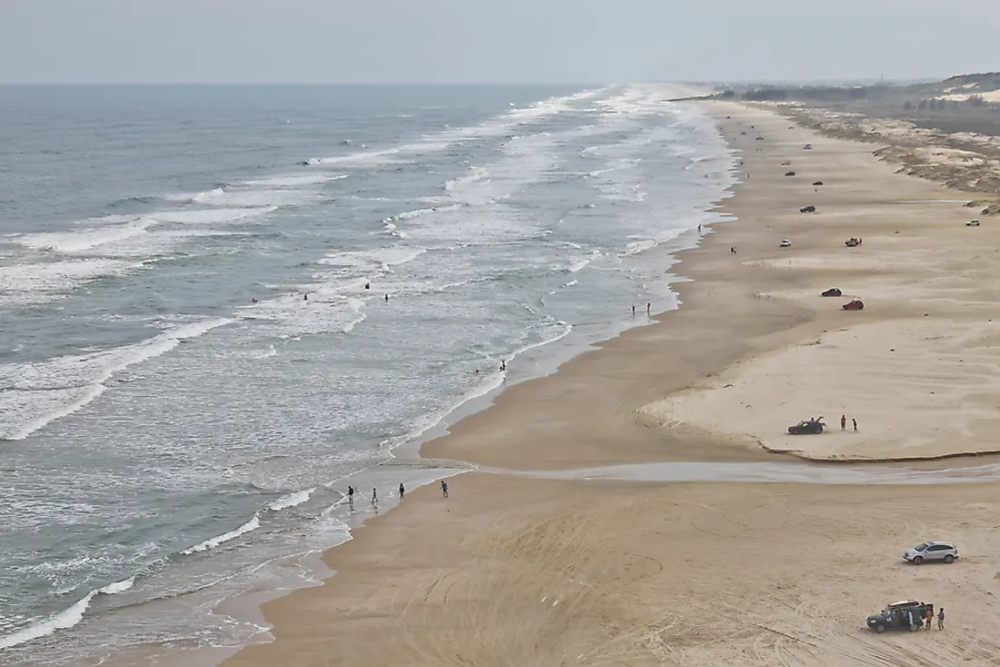
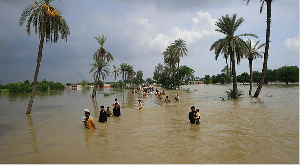

As praias só começaram a ser utilizadas como espaço de lazer em meados do século XVIII.

Em 1749, o banho de mar era utilizado para tratamento de doenças físicas e mentais.

A terapia praiana aqui no Brasil foi praticada pelo rei Dom João VI, que tomava frequentes banhos de mar para tratar uma ferida infeccionada em sua perna.
A maior praia do mundo está localizada no Brasil! No estado do Rio Grande do Sul, a Praia do Cassino possuí uma extensão de 252 quilômetros aproximadamente.
Existe uma praia de "diamantes" na Islândia. Conhecida como Diamond Beach, ela possuí uma faixa de areia preta coberta por pedaços de gelo que se assemelham a diamantes.

Há uma praia em Bahamas com areia cor de rosa. A Pink Sand Beach, é conhecida por sua areia rosa pálida, essa cor é ocasionada aos fragmentos microscópicos de coral que são trazidos à superfície pelo mar.

8 milhões de toneladas de plástico são descartadas no oceano anualmente, matando até 100 mil animais marinhos. Caso esse ritmo continue o mesmo, em 2050 haverá mais plástico do que peixes nos osceanos.

O aumento do nível do mar pode chegar a 2 metros até o final do século XXI, comprometendo a segurança de 745 milhões de pessoas em todo o mundo devido às inundações e catastrofés climáticas.
Existe uma ilha de lixo que flutua pelo Pacífico que possuí 3 vezes o tamanho da França.